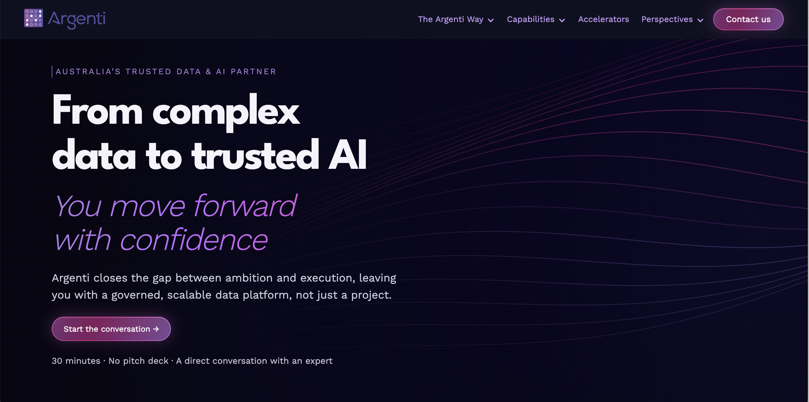

Data, AI & Technology Consulting
Argenti × JM Sites
Human-led AI-accelerated
How Argenti taught me what being a web developer actually means
HTML · CSS · JavaScript · HubSpot · GTM · GA4 · Clarity
Desktop Performance: 79 → 98

When I started working with Argenti, I genuinely thought I was already a web developer. I’d studied web development years earlier, built a few smaller sites, completed Webflow courses and thrown myself back into development with AI helping me move incredibly fast.
Don’t know something? Ask AI.
Code isn’t working? Ask AI.
Never built that before? Sweet, AI and I will work it out.
I felt good because I could keep figuring things out. Little did I know I mistook that for experience. Then I got the call from Simon and Argenti handed me a real business website and Webflow basically went: Cool. Now do it for real. 😂
That was when I realised there was a huge difference between being able to build something and being responsible for delivering it professionally.
✓
Plan
Discovery · Scope · Client meetings
✓
Build
CMS · Integrations · Development
✓
Measure
Analytics · Performance
✓
Verify
QA · Responsive testing · Launch
✓
Hand over
Documentation · Client handover
Argenti gave me room to grow into it
My confidence went everywhere during this project. At one point I was so deep in the details and so aware of everything I didn’t know, that full imposter syndrome kicked in. All I could think was am I a developer at all? What surprised me was the way Argenti responded.
They didn’t take the project away from me. They guided me.
Dave seemed to have a very good habit of asking the right question at exactly the right time. Mila and Mel helped me understand what the business actually needed and when the team could see I was overloaded, they sometimes reduced the noise instead of adding more of it.
They gave me room to solve things while still reminding me that, yes Jess, there was eventually supposed to be a finished website. 😂
Looking back, that balance mattered enormously.
They didn’t remove the responsibility from me. They gave me space to grow into it!
The shift that changed everything
Before Argenti, my instinct was usually: get in, build it, fix what breaks and keep moving.
The bigger the project became, the more obvious it was that this approach wasn't going to work.
I could move quickly but sometimes I was designing three pages ahead before I'd asked enough questions, solving the same type of problem twice or I was getting completely buried in details that didn't actually need my attention yet.
Argenti kept bringing me back to: slow down, understand what actually matters, then build from there.
Somewhere along the way I realised the answer to most of my chaos was the same thing: build a system
Understand
→
Plan
→
Build
→
Test
→
Improve
→
Document
Unfortunately, building the system after you’ve already made the mess isn’t exactly the easiest way to do it but as Argenti went on, I started looking at everything and asking, can I turn this into something cleaner and reusable? Could I refine more for this project and use it again across the site and eventually carry into the next build instead of starting from zero every single time.
The Style Guide became a system for keeping the design consistent. CMS Collections became systems for publishing instead of rebuilding pages. Debugging became a process instead of random fixes. QA became a checklist. Launch became a process. Even the way I worked with the team became more structured.
I definitely didn’t manage to follow every system perfectly while I was building them. Systems take time to test, refine and actually become useful and that was another one of those moments where I could clearly see the difference between a pro dev and a me dev😂. The difference now is that I know what I want to improve next time.
Weirdly, having systems didn’t make the work feel less creative, more difficult or restrictive. It did the opposite. It gave me more room to be creative and organised because I wasn’t trying to hold the entire project in my head at once.
Building systems from the beginning is one of the biggest things Argenti taught me and something I’ll carry into every JM Sites project from here: Build the solution for today, but build the system for what comes next.
How Argenti changed my relationship with AI
At the beginning, I trusted AI far too much. If it sounded smarter than me, I assumed it probably knew better.
Argenti completely changed that!
My voice matters
My judgment matters
Making mistakes myself, understanding them and learning how to fix them is a hell of a lot more useful than hiding behind an AI answer because it sounded clever. AI was still part of the project every day, helping me research, debug, learn, analyse code and move faster but I realised AI couldn’t do the human side. It couldn’t sit face-to-face in meetings, understand which feedback mattered most, make the final development decisions or take responsibility for the website. I’ve read versions of that idea before but actually making the mistakes myself, finishing the site and feeling the reward of getting there taught me something no paragraph of text ever could.
AI cannot be held accountable for the work. That part is mine.
That is where Human-led. AI-accelerated. finally made sense to me.
01
AI accelerates the work
02
People shape it
03
I own the result
What I’m taking with me
Argenti was my first real web development project. Not my first website or my first line of code but the first time I experienced the full responsibility of delivering a professional website from beginning to end. That matters to me because I came into this project confident that I could figure things out but now my confidence comes from something much better:
Real experience
I still don’t know everything and I’m actually far more comfortable with that now. I’ve also realised that the slightly muddled, over-explaining, very-Jess way I think isn't something I need AI to polish out of me. It’s part of how I question things, care about the details and keep digging when something doesn’t feel right.
I’ll make mistakes. Sometimes things will take longer than I expected but I will care about the result above all else, I will own the work and I will work hard to build something both the client and I are proud of.
That is the developer I want to be!
So while JM Sites helped build Argenti’s next digital chapter,
Argenti helped shape mine too
Thank you Simon, Dave, Mila, Mel and the wider Argenti team for the patience, trust, guidance and an incredible unforgetable first project. You gave me more than a website to build.
You gave me a way to build
I’ll carry a lot of the Argenti spirit into whatever JM Sites builds next. 💜